What have I been doing so far?
- Currently I am a student at the Delft University of Technology where I study computer science and engineering.
- Since 2017 I've had a part-time job as a web developer at HappyFlow, the Hague.
- I have a minor in robotics. During this minor we built a life-size interactie robotic guide named IONA for the Sience Centre, Delft.
- In the past I have competed in the RoboCupJunior national and world championships, of which i won the former.
- Now I am on the board that organises this national championship.
- Toghether with a team consisting of university personnel and students I am working on a robotics platform to help teach highschoolers the art of programming.
- I am a member of the Robotics Study Association (RSA) that aims to connect students in the robotics community to the industry.
